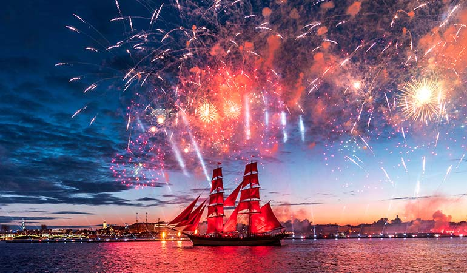
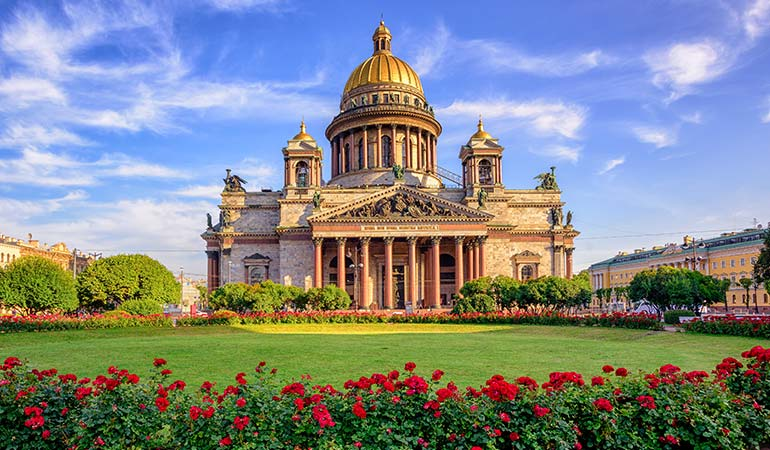
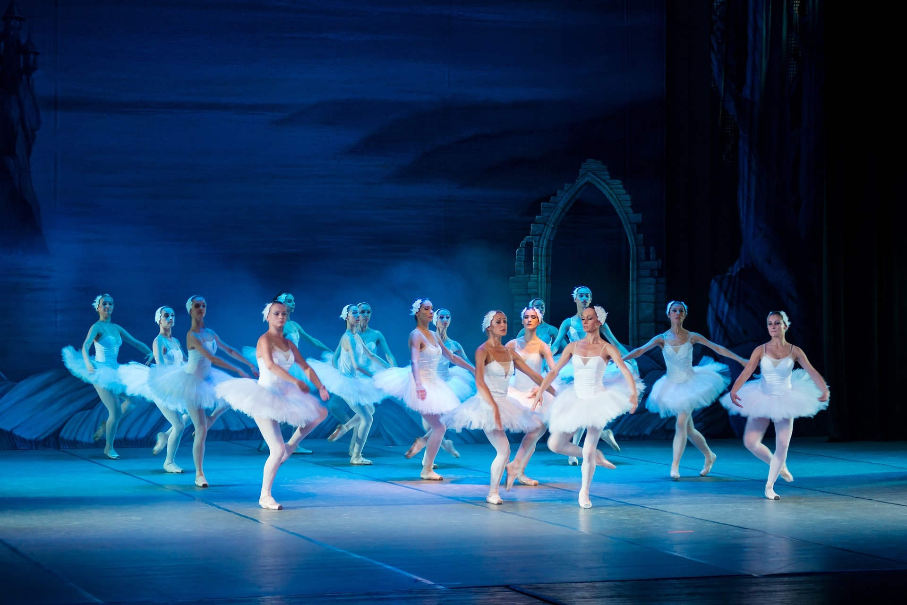
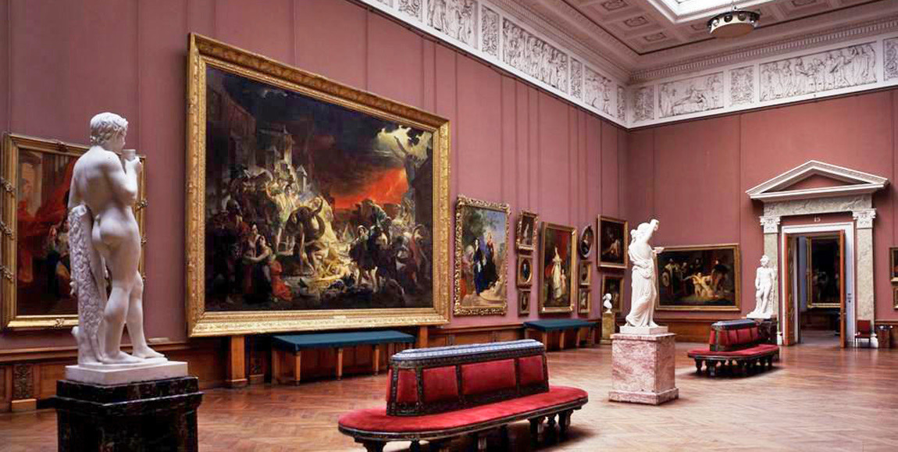
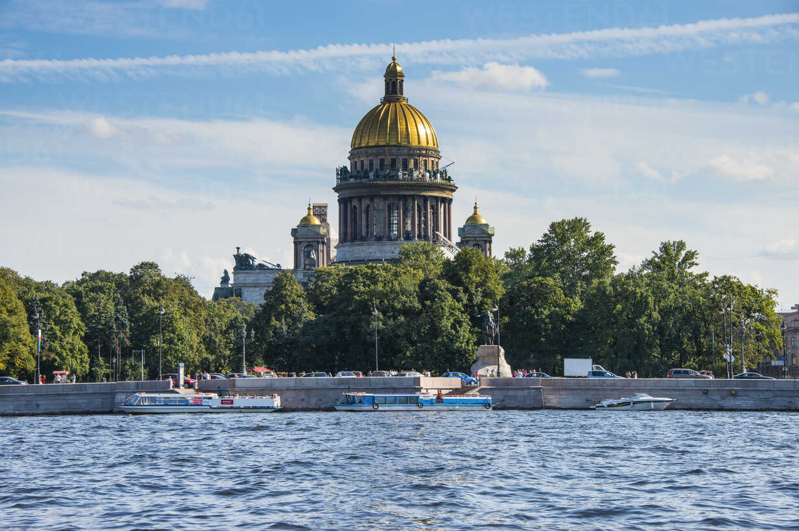
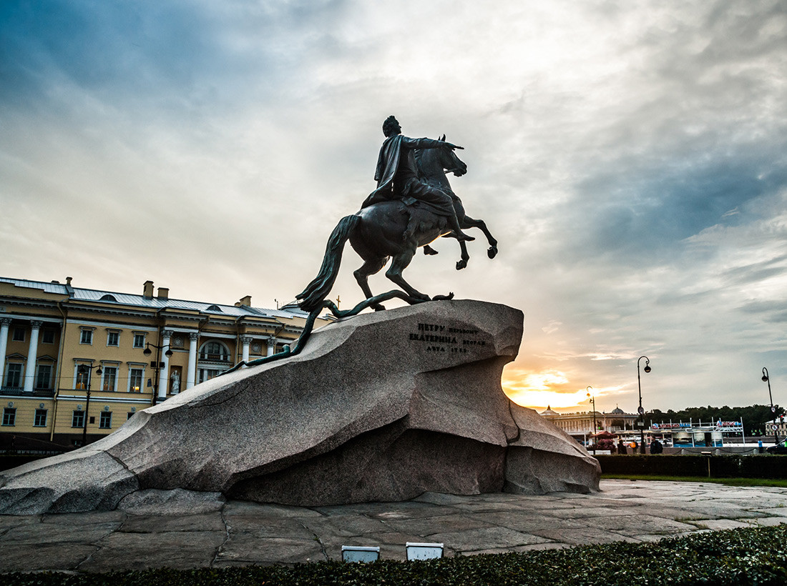

St Petersburg City
Reasons to visit Saint Petersburg
What we have
-

Bridges & Canals
-] St Petersburg holds the title of ‘Venice of the North’ for its numerous rivers and canals. The city was first founded on a group of islands, with travel between them intended only by boat. Later in the 18th century, the first bridges were constructed. Now, St Petersburg has 342 bridges around the rivers and canals of the cities, with the most famous ones over the main river – the Neva. The Palace Bridge is drawn every night and has become one of the most recognisable symbols of the city.
-
 White Nights
From May to July the city of St. Petersburg does not go dark. No, the strikingly beautiful sky instead turns celestial shades of blue and purple. This is a white night. As a result of this phenomenon which occurs in many northern cities, St. Petersburg throws the White Nights Festival. Every day throughout the summer you can attend ballets and operas at the Mariinsky Theatre.
-
 Imperial palaces
Both St Petersburg and Moscow were capital cities of Russia throughout history, with Moscow being the capital now. St Petersburg, though, was the capital during the flourishing times of the Russian Empire. Many noble families and, naturally, the royal families relocated to St Petersburg, building palaces and other luxurious homes for themselves.
hotels
-
 Ballet
The ballet is an essential part of St Petersburg’s culture. For years, it was one of the most popular forms of entertainment, where nobility and even the imperial family gathered to appreciate the art. Prima ballerinas were like superstars, with fans throwing flowers at their feet and desperately falling in love. Now, the tradition carries on, bringing the highest quality of ballet to audiences from around the world. .
-
 Art museums
Saint Petersburg’s nickname «an open-air architecture museum» says for itself. The city is known for its architectural offerings: Baroque, Classiсism, Constructivism, Northern modern, the list goes on. Nonetheless this mixture of styles doesn’t mean the existence of eclecticism, which is the feature of Moscow, for example. On the contrary the city architecture has its own logic, unity, uniqueness, order and rules.
-
 Russian Revolution
The Russian Revolution consisted of two revolutions in 1917 that ended Tsarist rule and eventually replaced it with a communist state. The first revolution was mainly centred in Petrograd (now St Petersburg) and overthrew Tsar Nicholas II. The second revolution was led by Vladimir Lenin and his Bolshevik party.
hotels
-
 St. Isaac’s Cathedral
This is why. Dominating this dazzling city’s skyline is the magnificent, golden, gilded dome of St. Isaac’s Cathedral. Climb to the top and forget about things to see in St. Petersburg, because from here you can see it all. Built by French-born architect Auguste Montferrand, St. Isaac’s Cathedral was once the largest in the country. And, while it may now lose out in size to Moscow’s Church of Christ the Saviour, it still boasts the better facade and interio
-

Russian literature
Begin your tour of literary St Petersburg at the home of the late Alexander Pushkin – Russia’s most beloved poet. The final living quarters of the author of famous works such as Eugene Onegin and The Queen of Spades, has been preserved at the National Pushkin Museum. The museum complex also houses a number of exhibitions dedicated to the poet, his life and his career, as well as broader artefacts from 18th and 19th century Russian history and culture.
-

Neoclassical architecture
The neoclassical architecture developed in many Russian cities, the first of St. Petersburg that during the reign of Catherine II was transformed into a modern capital. Russian classicism, from the point of view of world art history, is part of European neoclassicism. ... In the early Russian classicismOrigin of the styleIt should be noted the confusion in terms: in European art history the true, first, classicism is the style of the 17th century, followed by the second wave – neoclassicism of the late 18th